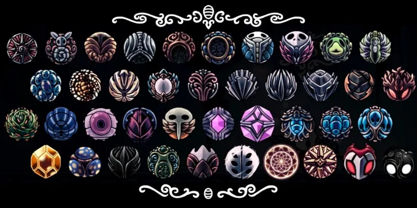

Os amuletos são itens especiais encontrados pelo Cavaleiro durante sua jornada por Hallownest. Cada amuleto possui um efeito único que pode melhorar diferentes aspectos do personagem, como ataque, defesa, movimentação ou utilização de feitiços.
Para equipar um amuleto, é necessário possuir entalhes suficientes. Como o espaço é limitado, o jogador precisa escolher cuidadosamente quais amuletos utilizar. Algumas combinações podem criar efeitos muito poderosos e permitir diferentes estilos de jogo.
Existem diversos amuletos espalhados por Hallownest, que podem ser encontrados durante a exploração, recebidos como recompensa ou comprados de determinados personagens. Descobrir e experimentar essas combinações é uma parte importante da aventura em Hollow Knight.
